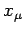
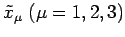
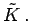

Inhalt Index DeskTop Bronstein

 Lineare Algebra Tensoren Transformation des Koordinatensystems
Lineare Algebra Tensoren Transformation des Koordinatensystems


Durch die lineare Transformation
wird im dreidimensionalen Raum eine Koordinatentransformation beschrieben. Dabei sind  und  die Koordinaten ein und desselben Punktes, bezogen auf zwei verschiedene Koordinatensysteme K und 